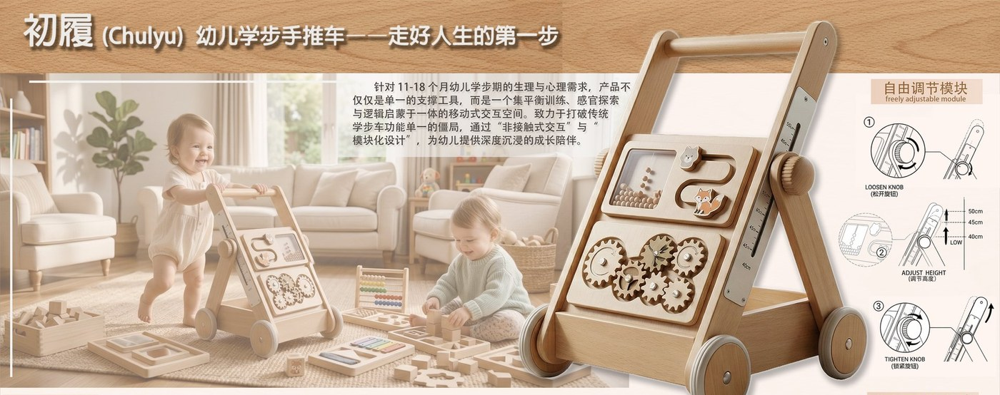
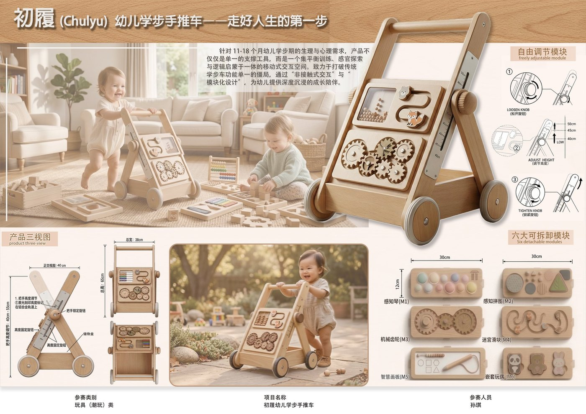

Challenge
学步产品要同时回应幼儿探索欲、家长安全焦虑和真实使用中的稳定性要求。
儿童产品设计 · 成长陪伴
为初学步幼儿设计的手推车产品。新版页面不再把整张展板作为唯一内容，而是围绕安全结构、玩具化亲和力、成长阶段适配三个角度，呈现儿童产品的设计判断。

学步产品要同时回应幼儿探索欲、家长安全焦虑和真实使用中的稳定性要求。
完成使用场景拆解、造型语言、安全接触点、色彩与互动模块的产品化表达。
采用低重心宽底座、圆润细节和温暖木色系，让产品兼具安全感和玩具亲和力。
把学步辅助、认知互动和成长陪伴整合在一个产品中，体现儿童产品的情感价值。
初履把“学步辅助”转化为可被孩子理解的探索玩具。宽底座和圆角处理回应安全需求，色彩和交互模块则让产品从工具变成陪伴孩子迈出第一步的媒介。

Product Decisions
用更宽的底部支撑和低重心结构，减少初学步阶段的侧翻风险。
形态和色彩保持亲近、柔和，让孩子主动接触，而不是被动接受辅助。
通过互动模块和可持续使用的造型语言，延长产品陪伴儿童成长的周期。